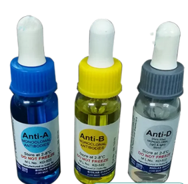

Microbiology is the study microscopic organisms either unicellular (single cell), multicellular (cell colony), or a cellular (lacking cells). Microbiology include the discipline virology, mycology, parasitology, bacteriology and so on. Some of the major test carried out in this unit include: widal test, urinalysis test, pregnancy test, etc.
Aim: to detect the presence parameters of ketone, pH, glucose, bilirubin, nitrate, leukocyte, blood, urobilinogen, sp, ck, protein in urine
urine sample, combi test strip, hand gloves


A dipstick: a thin plasticstick with strips of chemicals on it, is placed in the urine, the chemical strip change colour if certain substance are present of if their levels are above typical levels, the strips stick is dispose after reading the result.
Widal test is a test of serum that uses an agglutination reaction to make a presumptive diagnosis of typhoid fever (also known as enteric fever) and other Salmonella infections. The enteric fever is a life threatening illness caused by infection with the bacterium, Salmonella typhi usually transmitted through food and drinks contaminated with faecal matter. It is associated with symptoms that include; fatigue, headache, abdominal pain, diarrhoea, weight loss and high fever among others.
Widal test is based on demonstrating the presence of agglutinin (antibody) detected after fifteen days in the serum of an infected patient against the H (flagella) and O (somatic) antigens of Salmonella typhi. When the coloured, smooth, attenuated widal antigen suspension are mixed with patient serum, anti-salmonella antibodies present in serum react with the antigen suspensions to give agglutination
Blood sample was collected from a patient by venepuncture and transferred into an EDTA container to prevent it from clotting. The blood was spun for five minutes at 1000rpm to obtain the. One drop of the plasma appropriate widal antigen suspension was placed on 8 different spots on a clean white tile. Using a sample pipette, a drop of the plasma was added to each of the widal antigen and the content mixed uniformly with a separate mixing stick. The tile was rocked back and forth for one minute and observed for agglutination macroscopically
Agglutination was reported as a positive test result because in indicate the presence of the corresponding antibody in the patient’s serum. No agglutination was reported as a negative test result because it indicated the absence of the corresponding antibody in the patient’s serum. The result were recorded as 1/20, 1/40, 1/80, 1/160 and 1/320 based on the degree of agglutination. The samples which showed a titre of 1/80 and above were considered significant.